Drawn by the app's real drawBibCard / buildShareCardBlob, fed by the real finishSheetModel, with an in-memory prototype patch (tools/design/cheer/render.js). The cheer appears only when the real next-time suggestion (computeSuggestedSet, reason "increase") is heavier than today and the lift has a session before today. Seed: the harness fixture, Bench 185 lb.
The bib, Day 1 red
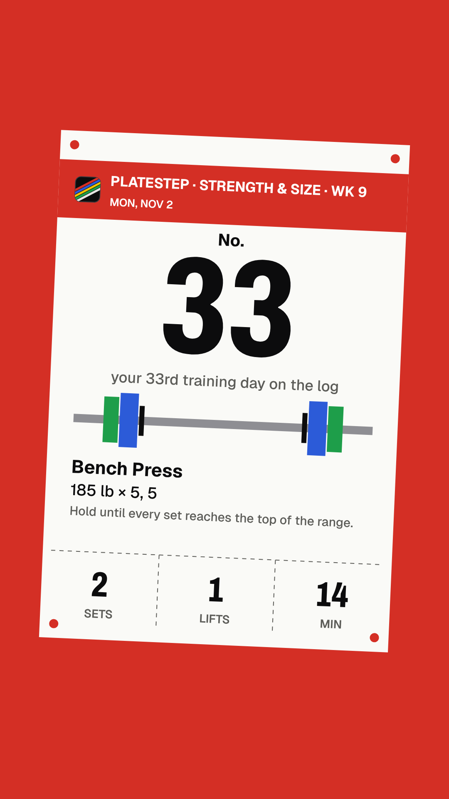
BeforeToday's bib (v3.645). Bench 185 × 5, 5: next time holds, so no cheer.
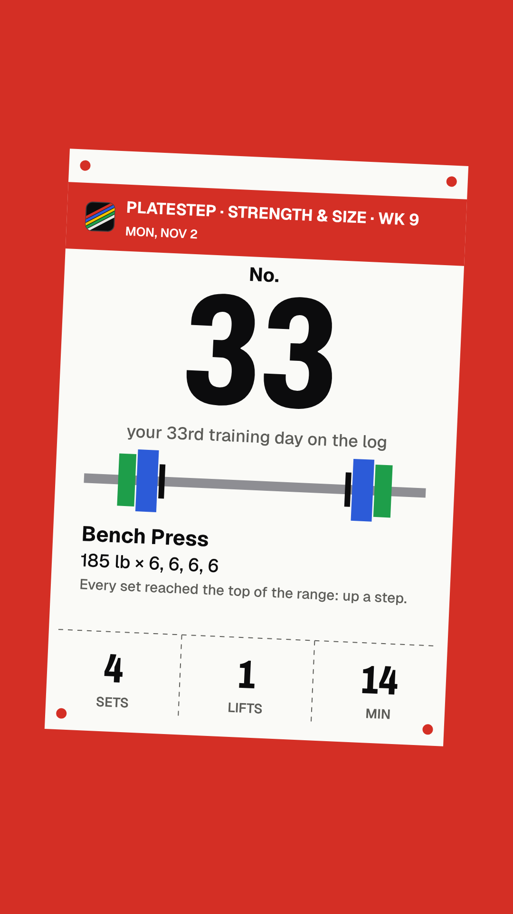
Before, raised dayBench 185 × 6 on every set: the note says "up a step", no cheer yet.
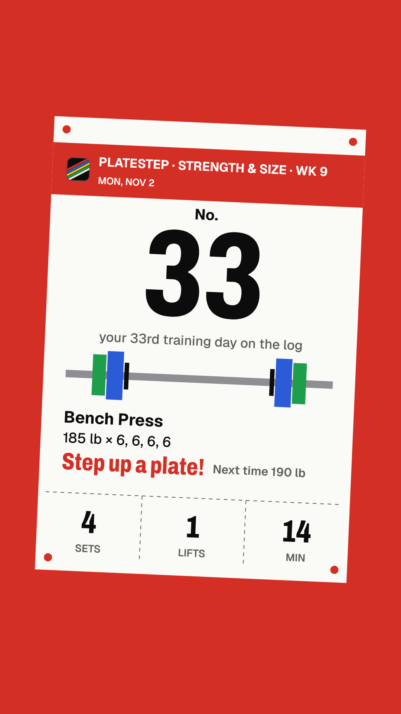
A · the next lineThe cheer takes the note's place in the display face, the next weight after it.
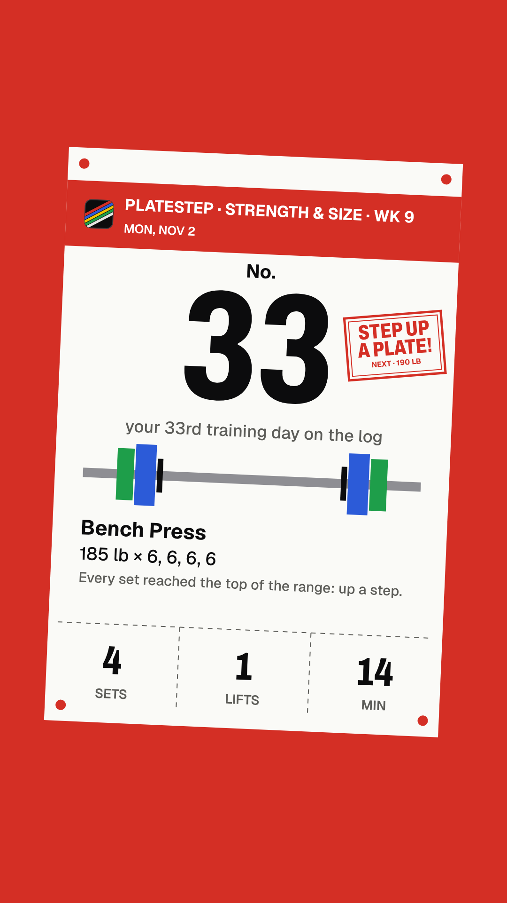
B · the stampA rubber stamp beside the number, the note kept.
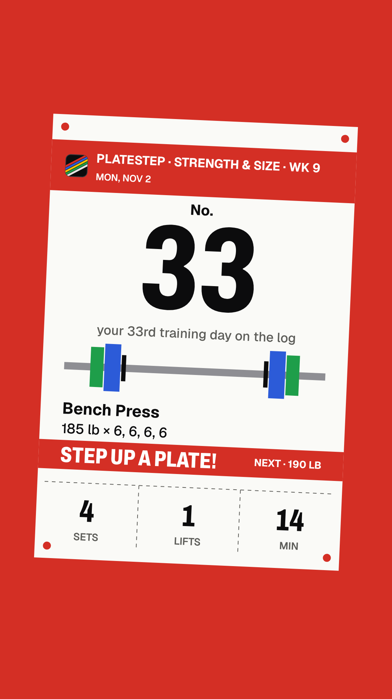
C · the second bandA band in the day's ink above the tear-off tabs, echoing the event band.
Another ink: yellow (the hardest on paper), white, the photo bib, a milestone day
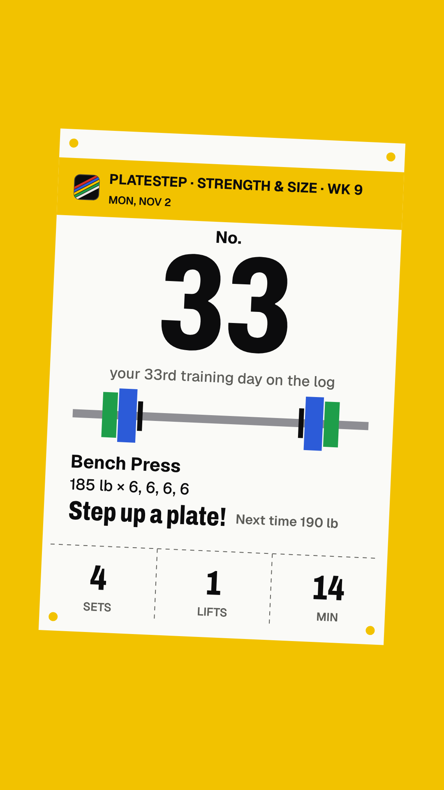
A · yellowYellow fails 3:1 on paper, so the line goes to the bib's black.
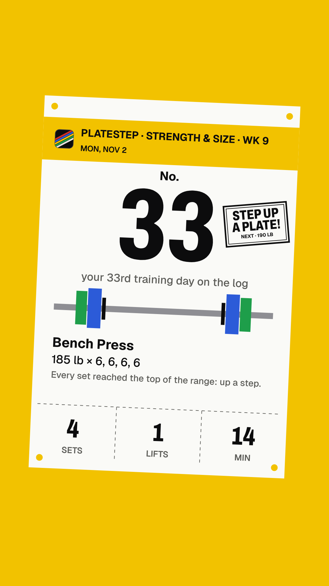
B · yellowThe stamp in black for the same reason.
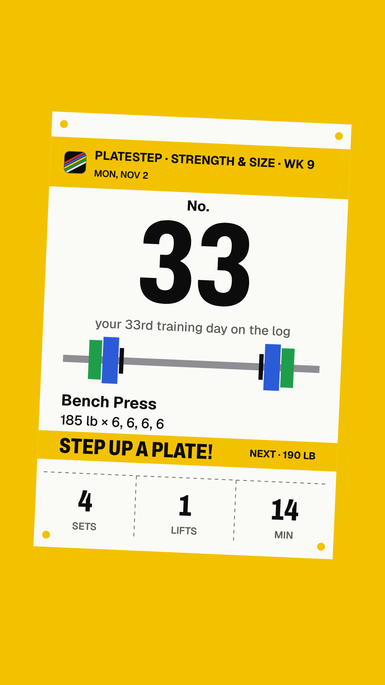
C · yellowThe band in yellow with black type, as the event band.
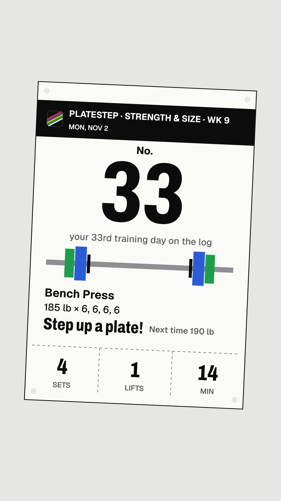
A · whiteA rest-day ink, for range.
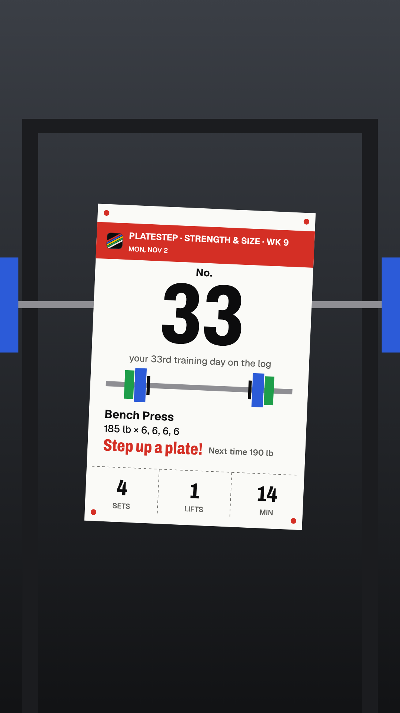
A · photo bibMKT-18, on a stand-in photo (no asset ships).
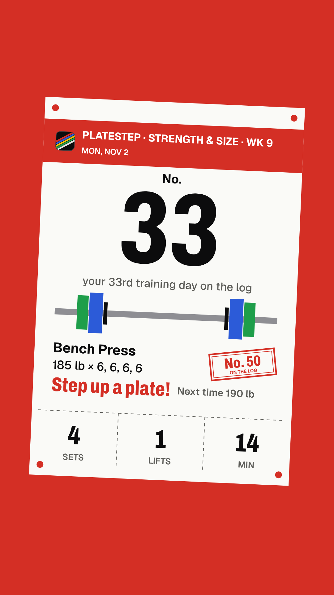
A · milestone dayThe No. 50 stamp and the cheer together: no collision.
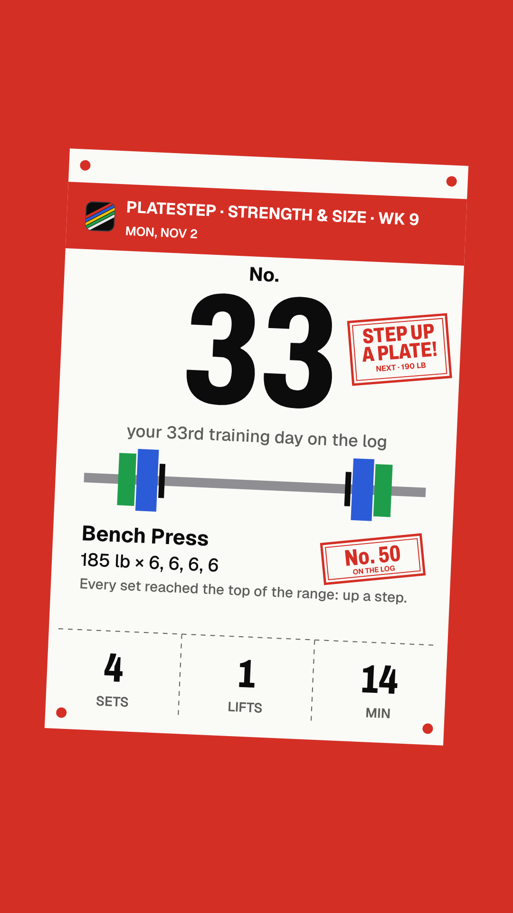
B · milestone dayTwo stamps on one bib: the weakness of B.
Today, 402 px: the cheer only on lifts the engine raised (store seed + Bench at the top of 4-6 twice)
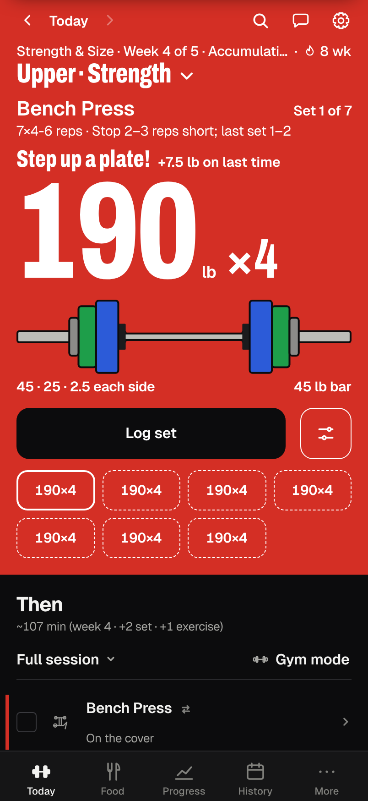
T1 · cover, darkUnder the lift name and prescription.
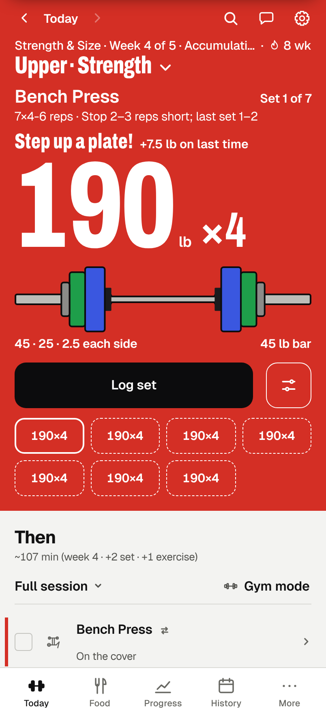
T1 · cover, lightThe cover keeps the day's ink in both themes.
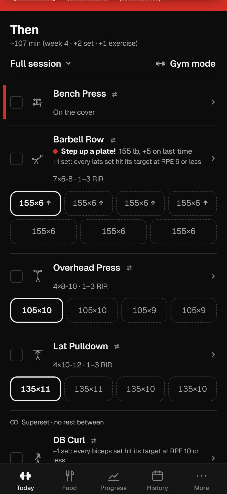
T2 · list row, darkUnder the exercise name, where the +1 set note sits.